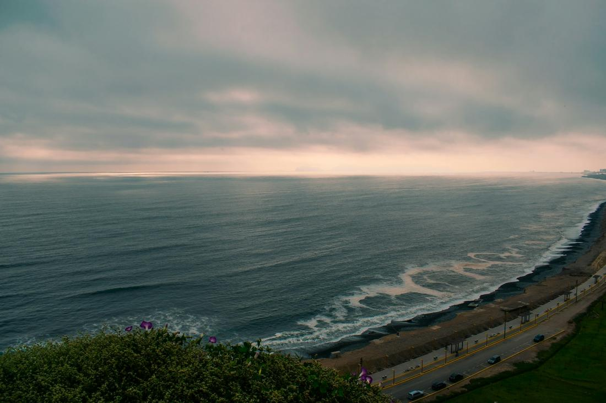
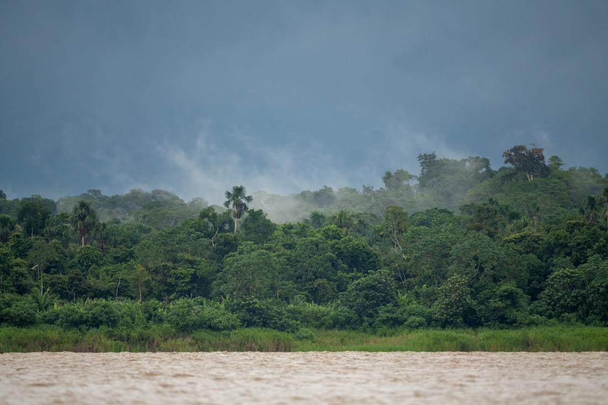

Ancient citadels, Andean peaks, and flavors you genuinely cannot find anywhere else.
Peru is one of those destinations I get almost as excited about as my clients do when I start building the itinerary. This is a country that holds one of the New Seven Wonders of the World in Machu Picchu, a capital city in Lima that has become a legitimate global food destination, and an Amazon rainforest region so remote and biodiverse that scientists are still discovering new species there. Very few countries let you move between all three worlds in a single trip.
As your travel advisor, here is exactly how I would build out a Peru itinerary: a few days in the Andes tracing the footsteps of the Inca Empire, a day or two in Lima eating your way through neighborhoods that consistently rank among the best food cities on earth, and, for clients with the time, a few nights deep in the Amazon where the pace of life slows to the rhythm of the river. Flights connect through Lima easily, and the payoff is a trip that feels genuinely different from anything else on most people's travel list.
Here are three excursions I love arranging for clients heading to Peru.

This is the trip most people picture when they say they want to go to Peru, and I build it to unfold slowly rather than rushing straight to the ruins. We start in Cusco, the former Inca capital, then spend a day working through the Sacred Valley, stopping at the terraced Inca fortress of Ollantaytambo, the colorful Sunday market and hilltop ruins at Pisac, and the otherworldly circular agricultural terraces at Moray, right alongside the thousands of shimmering salt pools still harvested by hand at Maras. From there, I book the scenic Vistadome train, with its glass-domed roof for mountain views, down to Aguas Calientes, the gateway town for Machu Picchu itself. Getting into the citadel early is everything, I always aim for guests to be among the first buses up so they can watch the sunrise mist burn off the ruins before the crowds arrive. For clients who are up for it, I love adding a partial hike up Huayna Picchu or a walk to the Sun Gate along the original Inca Trail, both of which give you a completely different, higher vantage point over the whole site. This is history you can actually stand inside, and it delivers every single time.

Lima does not get enough credit outside foodie circles, and I make it my mission to change that for every client passing through. This city has quietly become one of the most exciting food destinations on the planet, and I build a full day around tasting it properly. We start with fresh ceviche, Peru's national dish, in a neighborhood cevicheria where the fish was likely caught that same morning, then move to a hands-on pisco sour class with a local mixologist, since Peru and Chile both claim the drink and Lima will happily make its case. From there we wander the clifftop Malecón boardwalk in Miraflores, with the Pacific Ocean stretched out below, before heading into Barranco, Lima's bohemian, street-art-covered neighborhood, to cross the legendary Bridge of Sighs and browse its galleries and cafes. I always try to fit in a stop at the Larco Museum, home to an extraordinary collection of pre-Columbian gold and erotic pottery that gives real context to everything you will see later in Cusco. We close the day sampling causa, anticuchos, and lomo saltado at a bustling local market hall, because in Lima, the food really is the whole point of the visit.

For clients who want their Peru trip to include a completely different world, I add on a few nights at a jungle lodge near Puerto Maldonado, the gateway to the Tambopata National Reserve and one of the most accessible, biodiverse pockets of the Peruvian Amazon. Getting there is part of the adventure, a short flight from Cusco followed by a boat ride down the river to a lodge tucked directly into the rainforest, often with no electricity beyond a few solar-powered hours each evening. From there, days are built around guided excursions: a sunrise canoe trip across a jungle oxbow lake, a climb up a canopy tower that puts you level with the treetops and a completely different layer of wildlife, and a visit to one of the region's riverside clay licks where hundreds of macaws gather in a blaze of color most mornings. At night, guides take small groups out by flashlight to spot caimans and nocturnal creatures along the riverbank, and piranha fishing off a dugout canoe is a genuinely fun way to fill an afternoon. This is the part of the trip that tends to surprise people the most, because nothing quite prepares you for falling asleep to the actual sound of the Amazon.
Prefer to plan together? I'll build your custom package. Already know what you want? Book instantly through my travel portal.